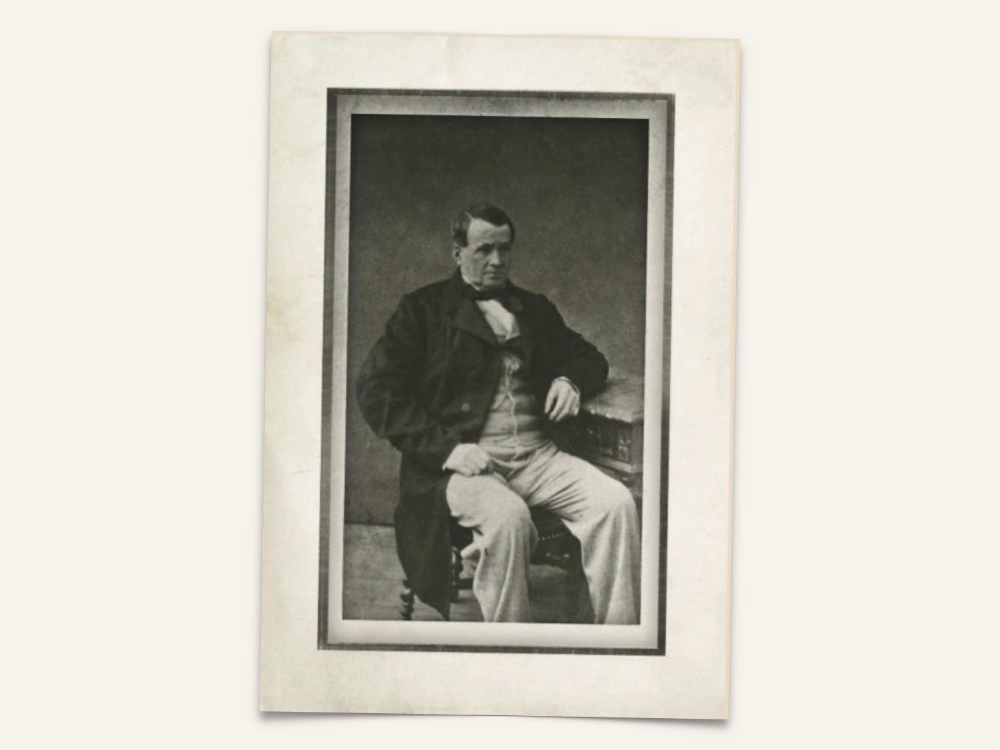

history

에르메스의 이야기는 마구용품 제작자 티에리 에르메스(Thierry Hermès)가 1837년 파리의 바스-듀-름파르(Basse-du-Rempart) 가에 공방을 오픈하면서 시작됩니다. 근대화의 바람이 불어오던 파리에서 그는 가볍고 심플한 마구용품을 열망하는 고객들의 바램을 처음부터 이해하고 이에 대비하였습니다. 그의 마구용품은 섬세하고 정밀하였으며, 모든 면에서 빈틈이 없는 내구성을 갖추었습니다. 그리하여, 1867년 파리 만국 박람회(Universal Exhibition)에서 수상을 하며 그 기술적 성과를 인정받았습니다.